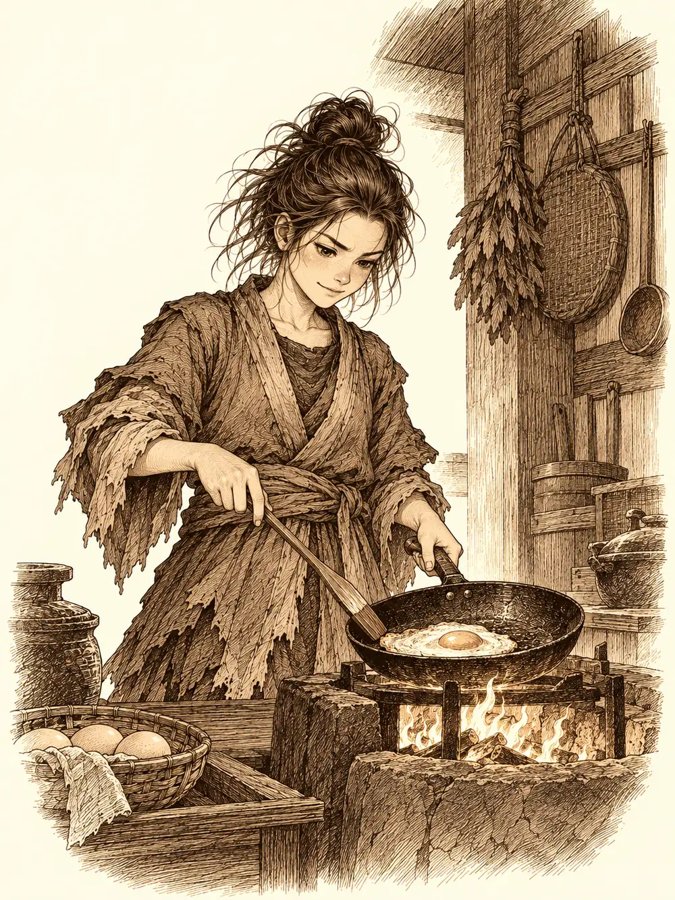

Capítulo 86
El rey Selina
Libro VI · La Puerta Negra
Ermitaño había vuelto a Nagari una última vez. Del pueblo no quedaba casi nada que enterrar: cenizas, huesos ennegrecidos, el armazón carbonizado de la pagoda. Intentó reunir lo que pudo en una fosa común y levantar al lado una capilla pequeña en memoria de aquella gente. De vuelta en Sho, había empezado a ayudar a Shiru con su cuerno nuevo; el ciervo andaba buscando minerales para la fundición y hablaba del proyecto con un entusiasmo que no le cabía en el pecho.
Blaze también había regresado. Había pasado un mes en Miyamoto con la familia de Shigeru, entrenando con el monje y aprendiendo a cocinar con su madrastra, y presumía de haber conseguido freír un huevo sin quemarlo. Para una muchacha que prendía fuego a las cosas casi sin querer, aquello era todo un logro. Gelbreak, el drow hermano de Danifae, llegaba de merodear por los alrededores de la puerta negra y de dar cuenta a los soldados del campamento de lo que había visto. Qué les había contado exactamente, no lo dijo.
Era un día libre. Nadie les había encargado nada. Delante de la base, dos mujeres conversaban sin molestarse en bajar la voz.
"Ese bardo me encanta. Cómo habla, cómo recita".
"Qué lástima que esté tan obsesionado con los cazadores. Y el tabernero no lo deja entrar".
El drow se acercó con una reverencia y les preguntó por aquel hombre. Era alto, esbelto, con aspecto de elfo y el cabello plateado, casi blanco. Les dejó dos monedas de oro en la mano para que, si volvían a verlo, le indicaran dónde estaba la base.
Lo buscaron por medio Sho. Shiru y Blaze pasaron por la panadería, donde la panadera conoció a la muchacha y le dio al ciervo, como siempre, todo lo que había sobrado del día anterior; él se fue moviendo la cola como un cervatillo. El drow y Ermitaño probaron en una casa de compañía, convencidos de que un bardo de paso tenía que acabar en un sitio así, y el clérigo preguntó a qué se dedicaban allí con tal inocencia que la respuesta le llegó entre sonrisas. Shiru intentó entrar en la taberna, y el tabernero le cerró el paso: los cazadores tenían prohibida la entrada desde el día en que un bárbaro abrió un agujero en la pared con una bola de fuego. El boquete seguía allí, abierto a la calle.
Por el camino se cruzaron con Shigeru. Volvía de la biblioteca, donde había devuelto al bibliotecario el pergamino que le había servido para terminar el muro de Miyamoto, y tenía que ver al shogun para hacerle una petición. Abrazó a Blaze, prometió avisar si veía al bardo y siguió su camino.
Fue la música la que lo encontró por ellos. Sonaba en una plaza cercana, y la gente se arremolinaba alrededor de un hombre sentado junto a un pozo con un instrumento entre las manos. Blaze ya estaba allí, en primera fila, escuchando. El músico era tal como lo habían descrito. Cuando hubo bastante público, dejó de tocar un momento.
"Damas y caballeros, gracias por este recibimiento. Mi nombre es Rodrigo. Soy instrumentista y, además, narrador de historias. Si tienen a bien prestarme atención, les contaré la historia de un rey de otra época: la historia del rey Selina, en un lugar llamado África".
Volvió a tocar mientras hablaba. Contó la vida del gran rey Mufasa, de su hermano Scar y de su hijo recién nacido, Simba, un cachorro travieso. Contó cómo Scar, celoso, urdió un plan para destronar a su hermano y culpar al sobrino, y cómo el plan salió bien. Contó el exilio de Simba, sus amigos, los años en que creció lejos de casa. Y cuando llegó al momento en que una vieja amiga encontraba a Simba y lo convencía para volver, los oyentes sintieron que les entraba sueño.
No se durmieron. Seguían oyendo cada palabra. Pero la plaza empezó a deshacerse alrededor como pintura bajo la lluvia, y cuando se aclaró del todo estaban en otro sitio.
Hierba alta y amarilla hasta donde alcanzaba la vista, algún árbol aislado de copa plana, un cielo enorme y un calor seco que se pegaba a la garganta. Muy cerca, un león que caminaba erguido como un hombre y empuñaba un espadón luchaba contra una manada de hienas que lo rodeaban riendo.
Blaze no se lo pensó. Lanzó una bola de fuego contra una de ellas, el estallido levantó una nube de polvo y pelo chamuscado, y las demás huyeron con el rabo entre las patas.
"No sé quién ha hecho eso, pero muchas gracias", dijo el león. "¿Quién ha lanzado esa bola de fuego?".
"He sido yo".
"Un placer, pequeña. Mi nombre es Simba, y soy el hijo de Mufasa, el antiguo rey".
El drow se palpó los brazos, la cara, el pecho. Era de carne. Estaba allí de verdad, con el cuerpo entero, y no había rastro de portal ni de magia que pudiera reconocer en aquella tierra. Se apartó del león con el ceño fruncido.
"La gente no aparece en un sitio porque sí. Y no me gusta que me trasladen sin permiso". Se volvió hacia sus compañeros y bajó la voz. "Ese maldito bardo nos ha metido aquí".
Blaze, en cambio, parecía casi contenta. De niña, contó, su padre la metía en cuentos cuando no paraba quieta, para que acabara durmiéndose; le había pasado tres veces.
"Siempre se acaba cuando derrotas a la bruja o al malo".
"O sea, que hay que acabar con Scar".
"Es una aventura", dijo ella, y le dio al drow un golpe con un palo en la espalda. "Diviértete un poco".
Simba se acercó entonces a la roca tras la que se había escondido Shiru y enfundó el espadón.
"Tú, cervatillo, no hace falta que te escondas. No voy a comerte".
"¿A ti no te explicaron la cadena alimenticia?".
"Por supuesto. Pero hoy necesito tu ayuda. Ayudadme a acabar con él y a recuperar mi reino".
Aceptaron, con la esperanza de que el cuento los soltara al llegar al final.
A medida que avanzaban, la vegetación se fue haciendo más rala y la tierra más pobre, hasta que no quedó casi nada vivo. Llegaron a un risco que se alzaba en mitad de la llanura como un dedo de piedra. Arriba, en la punta, los esperaba un león flaco de melena oscura.
"Vaya, vaya. Si es mi sobrino".
"Tantos años, Scar", contestó Simba, "y todavía no has escarmentado".
No quiso perder el tiempo en palabras. Subió de un salto por un atajo de la roca y, al ver que Ermitaño empezaba a trepar detrás, se volvió.
"Esta batalla debo librarla yo. Mantente al margen".

Desde arriba señaló al norte. Una avalancha de hienas cruzaba la llanura en dirección al risco.
"Él no luchará limpio. Contened a esas".
Blaze levantó un muro de fuego que cerraba casi todo el frente. Ermitaño se plantó en el hueco que quedaba, rodeado de espíritus guardianes que quemaban todo lo que entraba en su círculo, y envió su arma espiritual flotando hacia lo alto para cubrir la espalda del león. Las hienas eran más listas de lo que parecían: aprovecharon un desnivel y saltaron las llamas. El drow las recibió con su estoque y unos filos de pensamiento que les partían la mente, y en dos golpes había dos menos. Shiru estrelló el rodillo contra otra y la empujó de lleno contra el muro de fuego, de donde salió hecha un tizón.
Arriba, Scar aprovechaba cada ocasión para morder a traición, y en el primer choque fue Simba quien se llevó la peor parte. El drow decidió que aquello no podía esperar. Se trasladó entre sombras hasta el borde del risco, se volvió invisible y avanzó hacia los dos leones.
Simba notó su presencia sin verlo y lo empujó al vacío.
El drow logró aferrarse a la roca y bajó rodando, de saliente en saliente, con más rabia que heridas.
"Os he dicho que no os metáis", rugió el león desde arriba. Scar aprovechó la distracción para atacarlo por la espalda, y Simba se recompuso con un gruñido. "Tu juego sucio no funcionará conmigo, rata".
"Ya verás lo que le hago a ese Simba", masculló el drow, sacudiéndose la tierra. No volvió a intentar subir.
"¡Niña!", gritó Simba. "¡Ese muro de fuego, más cerca! ¡Ahí no podrán atravesarlo!".
Blaze deshizo las llamas y las volvió a levantar donde el león le indicaba, cerrando el acceso al risco. En el siguiente choque fue Simba quien tomó ventaja.
Entonces el cielo se nubló de golpe. Cayó un rayo a pocos pasos de ellos y, donde había golpeado, apareció Shigeru, tan perdido como ellos. No sabía cómo había llegado ni dónde estaba. Una hiena se le echó encima y él, que no llevaba armas, la recibió a puñetazos.
Llegaron cuatro más, y detrás una mucho más grande que las otras, que caminaba como si mandara. El drow fue el primero en señalarla, y Ermitaño y Blaze la vieron también entre el humo. Shiru no le prestó atención hasta que la tuvo delante. Intentó agarrarla y la hiena se le escurrió; lo intentó de nuevo con tanta furia que la levantó en el aire, la estampó contra el suelo, saltó sobre ella con el rodillo en alto y le descargó golpe tras golpe hasta que dejó de moverse. Después se irguió sobre el cadáver y alzó el rodillo como un trofeo.
"Creo que la cadena alimenticia se está invirtiendo", dijo Simba desde arriba.
Scar se quedó mirando aquello con los ojos muy abiertos, y en ese instante de duda Simba lo agarró y lo arrojó por encima del borde, de cabeza al muro de fuego. Las llamas se lo tragaron.
Las hienas que quedaban se dispersaron por la llanura. En su lugar empezaron a llegar otros animales, despacio, como si hubieran estado esperando aquel silencio.
"¿Qué hacéis aquí?", preguntó Shigeru, sacudiéndose el polvo. "¿Dónde estamos?".
"En un cuento", le dijo Blaze. "Y ese de ahí dice que es rey".
Simba bajó del risco y les dio las gracias a todos. Prometió un lugar en su reino incluso a las hienas que huían. Luego se volvió hacia el espacio vacío donde creía que seguía el drow invisible.
"Siento haber tenido que empujarte por el risco. Pero, como dije, esa lucha era entre Scar y yo".
Mientras el león hablaba con los demás, el drow se apartó. Rodeó la roca hasta el cuerpo calcinado de Scar, que todavía humeaba, y se agachó junto a él. Lo que hizo entonces no lo vio nadie: atrapó la sombra del muerto, la retuvo, y lejos de las miradas de sus compañeros tomó por un momento la forma del león flaco de melena oscura.
Con la forma le llegaron los recuerdos. Vio a un hermano menor acomplejado, a la sombra de un Mufasa admirado por todos; vio una infancia de golpes y un padre que solo tenía ojos para el otro hijo; vio los planes urdidos con las hienas, uno a uno, y toda la amargura que los había alimentado. Eran los recuerdos de un villano de cuento, nada más. Recuperó su propio cuerpo y volvió con los otros como si hubiera ido a estirar las piernas.
"Gracias otra vez", decía Simba. "Ahora podré reinar en paz".
Su voz empezó a alejarse. Como cuando habían llegado, la sabana se deshizo en una especie de duermevela, y al abrir los ojos estaban en la plaza de Sho, junto al pozo, con la gente aplaudiendo el final de la historia.
Rodrigo dejó el instrumento y se acercó a ellos con cara de no entender nada.
"No sé cómo ha pasado. Es la primera vez que me ocurre. Yo cuento las historias y ya está, pero de repente os habéis ido allí. Os he visto desde las alturas. Pensaba intervenir si hacía falta, pero no ha sido necesario".
El drow lo estudió con toda la atención de la que era capaz. No encontró mentira en su voz ni en su cara, lo que no significaba que no la hubiera.
"Me presento de nuevo", dijo el bardo. "Busco unirme a vosotros, a los cazadores. Mi especialidad es contar historias, ¿y qué mejor manera de contarlas fielmente que vivirlas en persona? Quiero ayudaros a vencer a Otakemaru".
Sabía cosas de ellos. Sabía de Gur, por ejemplo. Cuando le preguntaron de dónde había sacado tanta información, se encogió de hombros: la gente habla, y él solo había preguntado. Shigeru, al oír lo de Gur, entendió por fin por qué el tabernero no los dejaba entrar, y se ofreció a reparar él mismo el agujero de la pared.
De camino a la base, el drow se las arregló para quedarse a solas con el bardo. Habló con él apenas un minuto, en voz baja, con una calma que no tenía nada de calma. Mientras hablaba, algo se le fue metiendo a Rodrigo en la cabeza, una inquietud que crecía por dentro como agua negra.
"Que sea la última vez que me llevas a un sitio sin pedírmelo, maldito elfo".
"¡Pero si no he sido yo!", balbuceó Rodrigo, con la voz temblando. "Ni siquiera sé cómo ha pasado. Es la primera vez".
Lo dijo con miedo, sin saber que ese miedo no era del todo suyo. El drow siguió caminando. Detrás, el bardo apretaba el instrumento contra el pecho, preguntándose dónde se había metido.